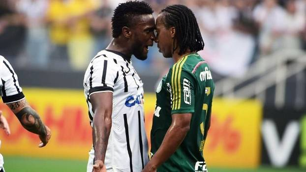

titutlos corinthians

historia
m 1 de setembro de 1910, um grupo de cinco operários (Joaquim Ambrósio, Antônio Pereira, Rafael Perrone, Anselmo Correa e Carlos Silva) do bairro paulistano Bom Retiro, sob a luz de um lampião, às oito e meia da noite, decidiram criar um novo time de futebol, além de mais oito pessoas que contribuíram com 20 mil réis e também foram considerados sócios-fundadores.[19] A ideia surgiu depois de assistirem à atuação do Corinthian FC,equipe inglesa de futebol fundada em 1882, que excursionava pelo Brasil. Os ingleses eram chamados pela imprensa da época de "Corinthian's Team", mas o time brasileiro só seria batizado "Sport Club Corinthians Paulista" depois de muita discussão e algumas reuniões. O presidente escolhido por eles foi o alfaiate Miguel Battaglia, que já no primeiro momento afirmou, "O Corinthians vai ser o time do povo e o povo é quem vai fazer o time". Da primeira arrecadação de recursos à compra da primeira bola de futebol do clube pouco tempo se passou, na verdade, apenas uma semana. Um terreno alugado na Rua José Paulino foi aplainado e virou campo, e foi lá que, já no dia 14 de setembro, o primeiro treino foi realizado diante de uma plateia entusiasmada que garantiu: "Este veio para ficar". De partida em partida o time foi se tornando famoso, mas era ainda um time de várzea
hino do corinthians
Salve o Corinthians, O campeão dos campeões. Eternamente, Dentro dos nossos corações. Salve o Corinthians, De tradições e glórias mil. Tu és o orgulho, Dos esportistas do Brasil Teu passado é uma bandeira, Teu presente, uma lição. Figuras entre os primeiros Do nosso esporte bretão. Corinthians grande, Sempre altaneiro. És do Brasil, O clube mais brasileiro!
classico e rivalidades
O Corinthians possui uma rica história diante de seus rivais históricos: contra o Palmeiras, São Paulo e Santos, sendo que os dois primeiros e o Corinthians fazem parte do chamado Trio de Ferro do futebol de São Paulo. O alvinegro paulistano é o único clube brasileiro a decidir títulos do Campeonato Brasileiro e confrontos em Copa Libertadores contra seus principais rivais. No Campeonato Brasileiro, conquistou seu primeiro título na competição ao derrotar o São Paulo em 1990. Em 1994 e 2002 perdeu o título para Palmeiras e Santos respectivamente. Pela Copa Libertadores, enfrentou o Palmeiras em seis oportunidades, com três vitórias cada, onde foi eliminado em 1999 e 2000 nas quartas-de-finais e semifinais respectivamente. Diante do Santos, ocorreram dois confrontos em 2012 nas semifinais, com uma vitória Corintiana e um empate. Contra o São Paulo foram dois confrontos em 2015 pela fase de grupos, com uma vitória cada. Durante o ano de 2014, primeiro ano da nova casa Corintiana, a Arena Corinthians, o Corinthians obteve três êxitos diante dos rivais nos primeiros clássicos em sua arena. Vitória sobre o Palmeiras por 2 a 0, vitória sobre o São Paulo por 3 a 2 e vitória por 1 a 0 sobre o Santos. Todos os confrontos válidos pelo Campeonato Brasileiro do respectivo ano.

derby paulista
O Derby Paulista é o nome do clássico disputado entre Corinthians e Palmeiras, considerado o mais tradicional da capital paulista e uma das maiores rivalidades mundiais. O nome do clássico foi dado pelo jornalista Tommaso Mazzoni, numa referência à mais importante corrida de cavalo do mundo, o Derby de Epsom, no qual sempre foi difícil de apontar o vencedor. Em virtude da clássica corrida de cavalos, o nome Derby acabou sendo identificado mundialmente para os confrontos relevantes em todos os esportes. Em 6 de maio de 1917, ocorreu o primeiro confronto entre os clubes, onde foi vencido pelo Palmeiras (na época, tinha o nome de Palestra Itália) pelo placar de 3 a 0, partida disputada no estádio Palestra Itália.
majestoso
O clássico Majestoso é a rivalidade entre Corinthians e São Paulo. O nome do clássico foi idealizado pelo jornalista Tommaso Mazzoni. O primeiro encontro entre os clubes ocorreu em 25 de maio de 1930, no estádio Parque São Jorge, com vitória do Corinthians por 2 a 1. O auge da rivalidade, deu início nos anos 90, onde os dois clubes mediram forças pelas semifinais da extinta Copa Conmebol em 1994, semifinais de Campeonatos Brasileiros e decisões de Campeonatos Paulistas. Os grandes duelos se estenderam nos anos 2000, com decisão de Torneio Rio-São Paulo em 2002 e semifinal de Copa do Brasil. Em decisões, Corinthians e São Paulo decidiram inúmeros Campeonatos Paulistas, a nível nacional decidiram o Campeonato Brasileiro de 1990, já a nível internacional decidiram a Recopa Sul-Americana de 2013. Figurando como a rivalidade brasileira que mais decidiu em números de torneios
Clássico alvinegro
O Clássico Alvinegro é disputado entre Corinthians e Santos, o clássico possui este nome em alusão as cores dos dois clubes. O primeiro duelo entre as equipes ocorreu em 6 de março de 1913, partida realizada no antigo estádio Parque Antarctica, onde a equipe do litoral venceu a equipe da capital por 6 a 3. Um dos fatos mais marcantes da história desta rivalidade, foram os tabus sem vitórias dos rivais. O Corinthians ficou sem vencer o rival por 11 anos em campeonatos paulistas, enquanto o Santos ficou sem vencer o Corinthians por 7 anos considerando todos os campeonatos. Em decisões de campeonatos, os alvinegros já decidiram alguns Campeonatos Paulista e decidiram o Campeonato Brasileiro de 2002. Em torneios internacionais se enfrentaram em uma oportunidade, pelas semifinais da Copa Libertadores de 2012 onde o Corinthians avançou para a decisão do torneio.